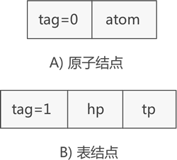
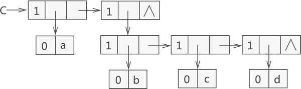
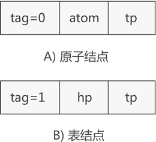
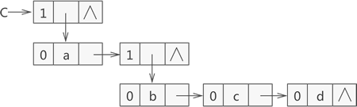
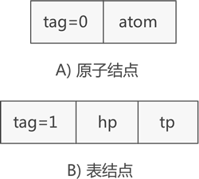
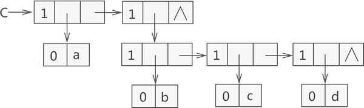
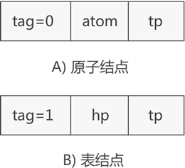
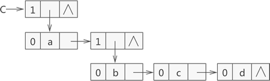

广义表的存储结构详解（包含2种存储方案）
由于广义表中既可存储原子（不可再分的数据元素），也可以存储子表，因此很难使用顺序存储结构表示，通常情况下广义表结构采用链表实现。

图 1 广义表节点的两种类型
如图 1 所示，表示原子的节点由两部分构成，分别是 tag 标记位和原子的值，表示子表的节点由三部分构成，分别是 tag 标记位、hp 指针和 tp 指针。
tag 标记位用于区分此节点是原子还是子表，通常原子的 tag 值为 0，子表的 tag 值为 1。子表节点中的 hp 指针用于连接本子表中存储的原子或子表，tp 指针用于连接广义表中下一个原子或子表。
因此，广义表中两种节点的 C 语言表示代码为：
例如，广义表 {a,{b,c,d}} 是由一个原子 a 和子表 {b,c,d} 构成，而子表 {b,c,d} 又是由原子 b、c 和 d 构成，用链表存储该广义表如图 2 所示：

图 2 广义表 {a,{b,c,d}} 的结构示意图
图 2 可以看到，存储原子 a、b、c、d 时都是用子表包裹着表示的，因为原子 a 和子表 {b,c,d} 在广义表中同属一级，而原子 b、c、d 也同属一级。
图 2 中链表存储的广义表用 C 语言代码表示为：

图 3 广义表的另一套节点结构
如图 3 所示，表示原子的节点构成由 tag 标记位、原子值和 tp 指针构成，表示子表的节点还是由 tag 标记位、hp 指针和 tp 指针构成。
图 3 的节点结构用 C 语言代码表示为：

图 4 广义表 {a,{b,c,d}} 的存储结构示意图
图 4 存储广义表对应的 C 语言代码为：
使用顺序表实现广义表结构，不仅需要操作 n 维数组（例如 {1,{2,{3,4}}} 就需要使用三维数组存储），还会造成存储空间的浪费。
使用链表存储广义表，首先需要确定链表中节点的结构。由于广义表中可同时存储原子和子表两种形式的数据，因此链表节点的结构也有两种，如图 1 所示：
图 1 广义表节点的两种类型
如图 1 所示，表示原子的节点由两部分构成，分别是 tag 标记位和原子的值，表示子表的节点由三部分构成，分别是 tag 标记位、hp 指针和 tp 指针。
tag 标记位用于区分此节点是原子还是子表，通常原子的 tag 值为 0，子表的 tag 值为 1。子表节点中的 hp 指针用于连接本子表中存储的原子或子表，tp 指针用于连接广义表中下一个原子或子表。
因此，广义表中两种节点的 C 语言表示代码为：
typedef struct GLNode{
int tag;//标志域
union{
char atom;//原子结点的值域
struct{
struct GLNode * hp,*tp;
}ptr;//子表结点的指针域，hp指向表头；tp指向表尾
}subNode;
}*Glist;
这里用到了 union 共用体，因为同一时间此节点不是原子节点就是子表节点，当表示原子节点时，就使用 atom 变量；反之则使用 ptr 结构体。例如，广义表 {a,{b,c,d}} 是由一个原子 a 和子表 {b,c,d} 构成，而子表 {b,c,d} 又是由原子 b、c 和 d 构成，用链表存储该广义表如图 2 所示：

图 2 广义表 {a,{b,c,d}} 的结构示意图
图 2 可以看到，存储原子 a、b、c、d 时都是用子表包裹着表示的，因为原子 a 和子表 {b,c,d} 在广义表中同属一级，而原子 b、c、d 也同属一级。
图 2 中链表存储的广义表用 C 语言代码表示为：
Glist creatGlist(Glist C) {
//广义表C
C = (Glist)malloc(sizeof(Glist));
C->tag = 1;
//表头原子‘a’
C->subNode.ptr.hp = (Glist)malloc(sizeof(Glist));
C->subNode.ptr.hp->tag = 0;
C->subNode.ptr.hp->subNode.atom = 'a';
//表尾子表（b,c,d）,是一个整体
C->subNode.ptr.tp = (Glist)malloc(sizeof(Glist));
C->subNode.ptr.tp->tag = 1;
C->subNode.ptr.tp->subNode.ptr.hp = (Glist)malloc(sizeof(Glist));
C->subNode.ptr.tp->subNode.ptr.tp = NULL;
//开始存放下一个数据元素（b,c,d）,表头为‘b’，表尾为（c,d）
C->subNode.ptr.tp->subNode.ptr.hp->tag = 1;
C->subNode.ptr.tp->subNode.ptr.hp->subNode.ptr.hp = (Glist)malloc(sizeof(Glist));
C->subNode.ptr.tp->subNode.ptr.hp->subNode.ptr.hp->tag = 0;
C->subNode.ptr.tp->subNode.ptr.hp->subNode.ptr.hp->subNode.atom = 'b';
C->subNode.ptr.tp->subNode.ptr.hp->subNode.ptr.tp = (Glist)malloc(sizeof(Glist));
//存放子表(c,d)，表头为c，表尾为d
C->subNode.ptr.tp->subNode.ptr.hp->subNode.ptr.tp->tag = 1;
C->subNode.ptr.tp->subNode.ptr.hp->subNode.ptr.tp->subNode.ptr.hp = (Glist)malloc(sizeof(Glist));
C->subNode.ptr.tp->subNode.ptr.hp->subNode.ptr.tp->subNode.ptr.hp->tag = 0;
C->subNode.ptr.tp->subNode.ptr.hp->subNode.ptr.tp->subNode.ptr.hp->subNode.atom = 'c';
C->subNode.ptr.tp->subNode.ptr.hp->subNode.ptr.tp->subNode.ptr.tp = (Glist)malloc(sizeof(Glist));
//存放表尾d
C->subNode.ptr.tp->subNode.ptr.hp->subNode.ptr.tp->subNode.ptr.tp->tag = 1;
C->subNode.ptr.tp->subNode.ptr.hp->subNode.ptr.tp->subNode.ptr.tp->subNode.ptr.hp = (Glist)malloc(sizeof(Glist));
C->subNode.ptr.tp->subNode.ptr.hp->subNode.ptr.tp->subNode.ptr.tp->subNode.ptr.hp->tag = 0;
C->subNode.ptr.tp->subNode.ptr.hp->subNode.ptr.tp->subNode.ptr.tp->subNode.ptr.hp->subNode.atom = 'd';
C->subNode.ptr.tp->subNode.ptr.hp->subNode.ptr.tp->subNode.ptr.tp->subNode.ptr.tp = NULL;
return C;
}
广义表的另一种存储结构
如果你觉得图 2 这种存储广义表的方式不合理，可以使用另一套表示广义表中原子和子表结构的节点，如图 3 所示：
图 3 广义表的另一套节点结构
如图 3 所示，表示原子的节点构成由 tag 标记位、原子值和 tp 指针构成，表示子表的节点还是由 tag 标记位、hp 指针和 tp 指针构成。
图 3 的节点结构用 C 语言代码表示为：
typedef struct GNode {
int tag;//标志域
union {
int atom;//原子结点的值域
struct GNode* hp;//子表结点的指针域，hp指向表头
}subNode;
struct GNode* tp;//这里的tp相当于链表的next指针，用于指向下一个数据元素
}GLNode, *Glist;
采用图 3 中的节点结构存储广义表 {a,{b,c,d}} 的示意图如图 4 所示：

图 4 广义表 {a,{b,c,d}} 的存储结构示意图
图 4 存储广义表对应的 C 语言代码为：
Glist creatGlist(Glist C) {
C = (Glist)malloc(sizeof(GLNode));
C->tag = 1;
C->subNode.hp = (Glist)malloc(sizeof(GLNode));
C->tp = NULL;
//表头原子a
C->subNode.hp->tag = 0;
C->subNode.hp->subNode.atom = 'a';
C->subNode.hp->tp = (Glist)malloc(sizeof(GLNode));
C->subNode.hp->tp->tag = 1;
C->subNode.hp->tp->subNode.hp = (Glist)malloc(sizeof(GLNode));
C->subNode.hp->tp->tp = NULL;
//原子b
C->subNode.hp->tp->subNode.hp->tag = 0;
C->subNode.hp->tp->subNode.hp->subNode.atom = 'b';
C->subNode.hp->tp->subNode.hp->tp = (Glist)malloc(sizeof(GLNode));
//原子c
C->subNode.hp->tp->subNode.hp->tp->tag = 0;
C->subNode.hp->tp->subNode.hp->tp->subNode.atom = 'c';
C->subNode.hp->tp->subNode.hp->tp->tp = (Glist)malloc(sizeof(GLNode));
//原子d
C->subNode.hp->tp->subNode.hp->tp->tp->tag = 0;
C->subNode.hp->tp->subNode.hp->tp->tp->subNode.atom = 'd';
C->subNode.hp->tp->subNode.hp->tp->tp->tp = NULL;
return C;
}
需要初学者注意的是，无论采用以上哪一种节点结构存储广义表，都不要破坏广义表中各数据元素之间的并列关系。拿 {a,{b,c,d}} 来说，原子 a 和子表 {b,c,d} 是并列的，而在子表 {b,c,d} 中原子 b、c、d 是并列的。关注公众号「站长严长生」，在手机上阅读所有教程，随时随地都能学习。内含一款搜索神器，免费下载全网书籍和视频。

微信扫码关注公众号